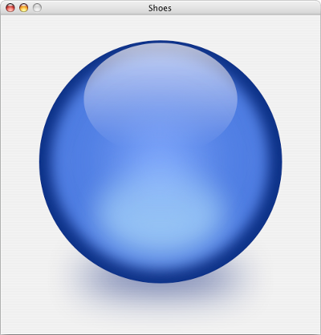
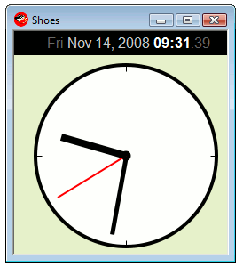
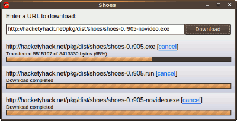

The Shoes Manual
Introducing Shoes
How does Shoes look on OS X and Windows? Does it really look okay? Is it all ugly and awkward? People must immediately convulse! It must be so watered down trying to do everything.
Well, before getting into the stuff about installing and running Shoes, time to just check out some screenshots, to give you an idea of what you can do.
Mac OS X
Shoes runs on Apple Mac OS X Leopard, as well as Tiger. Shoes supports PowerPC machines as well, however, there is no video support on that platform. 
This is the simple-sphere.rb sample running on Tiger. Notice that the app runs inside a normal OS X window border.
The whole sphere is drawn with blurred ovals and shadows. You can draw and animate shapes and apply effects to those shapes in Shoes.
Windows
Shoes runs on all versions of Microsoft Windows XP, Microsoft Windows Vista, and anything else Windows 2000 compatible. 
Above is pictured the simple-clock.rb sample running on Windows Vista. This example is also draws ovals and lines to build the clock, which is animated to repaint itself several times each second.
Notice the text on the top of the app, showing the current time. Shoes has the skills to layout words using any color, bold, italics, underlines, and supports loading fonts from a file.
Linux
Here's a screenshot of the simple-downloader.rb sample running on Ubuntu Linux. 
Notice the buttons and progress bars. These types of controls look different on OS X and Windows. The text and links would look the same, though.
Shapes, text, images and videos all look the same on every platforms. However, native controls (like edit lines and edit boxes) will match the look of the window theme. Shoes will try to keep native controls all within the size you give them, only the look will vary.
Next: Installing Shoes